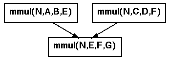

 <center> <H1>  $B%G!<%?%U%m!<%0%i%U$N:n@.(B  </H1> </center> <hr noshade width = 80% algn = "center"> <H2>

$B%G!<%?%U%m!<%0%i%U$O!"%/%i%$%"%s%H$G:n@.$9$k!#(B
<p>
<ol>
<LI> <code>Ninf_check_in()</code> $B$,<B9T$5$l$k$H%H%i%s%6%/%7%g%s(B
$B$NCf$K$O$$$k(B<p>
<LI> $B%H%i%s%6%/%7%g%s$NCf$G(B<code>Ninf_call()</code> $B$,<B9T$5$l$k$H!"(B
$B%a%?%5!<%P$K%3%M%/%H$7!"%$%s%?!<%U%'%$%9>pJs$r<hF@$9$k(B<p>
<LI> $B%$%s%?!<%U%'%$%9>pJs$NCf$N%b!<%I>pJs$H!"(B
$B0z?t$N6&M->uBV$+$i3F(B<code>Ninf_call</code>$B4V$N0MB84X78$rF3$-!"(B
$B%G!<%?%U%m!<$H$7$FC_@Q$9$k(B<p>

<LI> <code>Ninf_check_in()</code> $B$,<B9T$5$l$k$H%H%i%s%6%/%7%g%s(B
$B$N=*N;$H$_$J$9!#$3$N;~E@$G$G$-$F$$$k%G!<%?%U%m!<$,%H%i%s%6%/%7%g%s$N(B
$B%G!<%?%U%m!<$G$"$k(B
</ol>
<center>
<table>
<td>
<font size=4>
<PRE>
Ninf_check_in();
Ninf_call(&quot;mmul&quot;,N,A,B,E);
Ninf_call(&quot;mmul&quot;,N,C,D,F);
Ninf_call(&quot;mmul&quot;,N,E,F,G);
Ninf_check_out();
</PRE>
</font>
</td>
<td>

</td>
</table>
</center>
 <hr> <center><table><td><h2>$B!!!!!!!!!!!!!!!!!!!!!!!!!!!!!!(B</td><td></td><td></td><td><h2><em>$B!!!!!!!!!!!!!!(BHOKKE' 96 </td></table></center>

